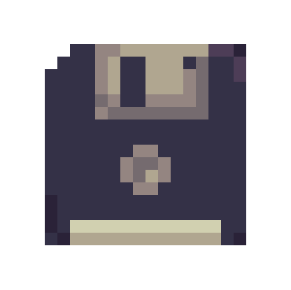

Gabriel Silva
Pentest and Reverse engineering student
-

-

- 
About me
Hey, I'm SolairX, a reverse engineering and Pentest student.
A reverse engineering and Pentest student.
My interests include:
everything related to cybersecurity, low-level programming, and studying various types of vulnerabilities.
I practice CTF on platforms like Hack The Box, TryHackMe, and I'm also fond of OSINT. I enjoy science, music, and art.